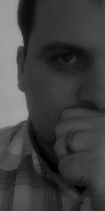

Kreatív alkalmazás tervező és fejlesztő vagyok, az üzleti alkalmazások széles skálájának ismeretével.
Elsősorban kliens–szerver
architektúrában fejlesztek, a közösségi média, közösségi játék és a mobil fejlesztések területén.
Mindig kiemelt figyelmet
fordítok a kellően absztrakt és újrafelhasználható kód megalkotására, hogy könnyen fejlődő alkalmazásokat készítsek. Kreatív,
pro-aktív hozzáállással, analitikus gondolkodás móddal, pragmatikus megközelítéssel igyekszem megoldani a felmerülő problémákat.
Mindig nyitott vagyok az új technológiák megismerésére.